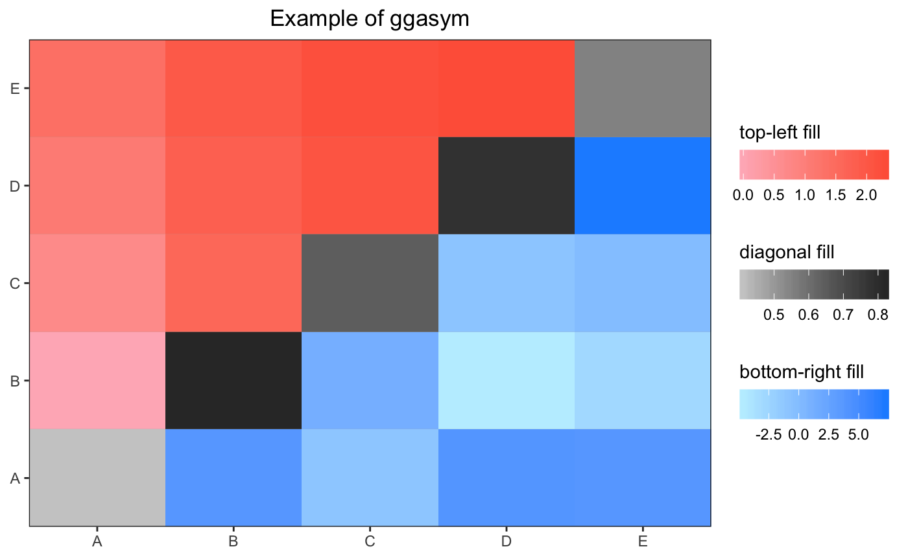
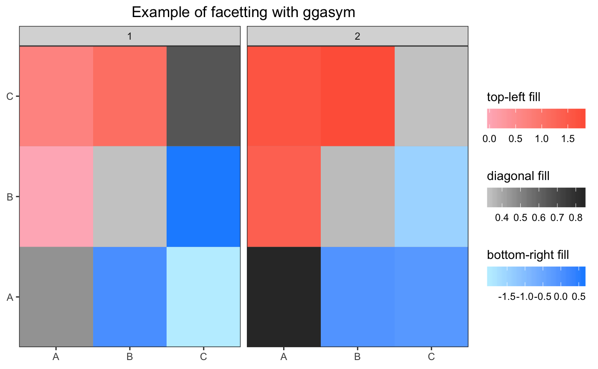
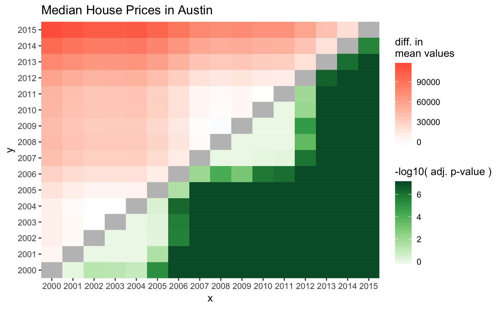

ggasym (pronounced “gg-awesome”) plots a symmetric matrix with two different fill aesthetics for the top-left and bottom-right triangles and along the diagonal. It operates within the Grammar of Graphics paradigm implemented in ggplot2.
author: Joshua H. Cook
date: 2019-02-22
Asymmetric Matrix Plotting in ggplot
Checkout the documentation and vignettes at the pkgdown website https://jhrcook.github.io/ggasym/
For information on using ggplot2, start here.
Download and Installation
You can download and install from the GitHub repo. Eventually, this will hopefully be available on CRAN, too.
devtools::install_github("jhrcook/ggasym")And load the package with the standard library function.
library(ggasym)Basic Usage
Here is a basic example. tib is a “tibble” (ie. fancy “data.frame”) of comparisons between groups “A” through “E”. There are two values to be plotted, val_1 and val_2, that hold data on the comparison between g1 and g2. tib is first passed to asymmetrise to fill in all the missing combinations between g1 and g2 such that the symmetric matrix can be built. All added values take the value NA. The modified data table is finally passed to ggplot and geom_asymmat is added on. Here, asymmetrise added the rows where g1 and g2 are equal, thus will fill the diagonal. I set these values to val_3.
tib <- tibble(g1 = c("A", "A", "A", "A", "B", "B", "B", "C", "C", "D"),
g2 = c("B", "C", "D", "E", "C", "D", "E", "D", "E", "E"),
val_1 = seq(1, 10, 1),
val_2 = rnorm(10, mean = 0, sd = 3))
tib <- asymmetrise(tib, g1, g2)
tib$val_3 <- runif(nrow(tib))
ggplot(tib, aes(x = g1, y = g2)) +
geom_asymmat(aes(fill_tl = val_1, fill_br = val_2, fill_diag = val_3)) +
scale_fill_tl_gradient(low = "lightpink", high = "tomato") +
scale_fill_br_gradient(low = "lightblue1", high = "dodgerblue") +
scale_fill_diag_gradient(low = "yellow", high = "orange3")
New Aesthetics
The new aesthetics fill_tl, fill_br, and fill_diag behave just like the normal fill, except that they correspond to the top-left (“tl”) and bottom-right (“br”) triangles of the matrix, respectively. This package also includes analogous functions for scaling the fill colors such as scale_fill_tl_gradient2 and scale_fill_br_gradientn that operate just as expected when using ggplot2.
ggplot(tib, aes(x = g1, y = g2)) +
geom_asymmat(aes(fill_tl = val_1, fill_br = val_2, fill_diag = val_3)) +
scale_fill_tl_gradient(low = "lightpink", high = "tomato") +
scale_fill_br_gradient2(low = "orange", mid = "white", high = "dodgerblue") +
scale_fill_diag_gradientn(colors = rainbow(25))
Adjusting Colorbars
Of note, with three colorbars, it may be useful to control their position and other properties. This can be done just like normal in ggplot by passing the correct values to the guide parameter in scale_fill_*_gradient (original documentation). Below are a few of the options where I put the bars horizontal, adjust the ordering, and put the title above each.
ggplot(tib, aes(x = g1, y = g2)) +
geom_asymmat(aes(fill_tl = val_1, fill_br = val_2, fill_diag = val_3)) +
scale_fill_tl_gradient(low = "lightpink", high = "tomato",
guide = guide_colourbar(direction = "horizontal",
order = 1,
title.position = "top")) +
scale_fill_br_gradient2(low = "orange", mid = "white", high = "dodgerblue",
guide = guide_colourbar(direction = "horizontal",
order = 3,
title.position = "top")) +
scale_fill_diag_gradientn(colors = rainbow(25),
guide = guide_colourbar(direction = "horizontal",
order = 2,
title.position = "top"))
Full ggplot2 integration
Since the new geom is a normal ggplot2 object, it can be introduced into a standard ggplot2 workflow. Note that the labels can be adjusted like normal using the labs function and using the fill_tl, fill_br, and fill_diag arguments.
ggplot(tib, aes(x = g1, y = g2)) +
geom_asymmat(aes(fill_tl = log(val_1),
fill_br = val_2,
fill_diag = val_3)) +
scale_fill_tl_gradient(low = "lightpink", high = "tomato",
guide = guide_colourbar(direction = "horizontal",
order = 1,
title.position = "top")) +
scale_fill_br_gradient(low = "lightblue1", high = "dodgerblue",
guide = guide_colourbar(direction = "horizontal",
order = 3,
title.position = "top")) +
scale_fill_diag_gradient(low = "grey80", high = "grey20",
guide = guide_colourbar(direction = "horizontal",
order = 2,
title.position = "top")) +
labs(fill_tl = "top-left fill",
fill_br = "bottom-right fill",
fill_diag = "diagonal fill",
title = "Example of ggasym") +
theme_bw() +
theme(axis.title = element_blank(),
plot.title = element_text(hjust = 0.5),
panel.background = element_rect(fill = "grey70"),
panel.grid = element_blank()) +
scale_x_discrete(expand = c(0, 0)) +
scale_y_discrete(expand = c(0, 0))
Facetting
If you have multiple categories, facetting works as expected. The only difference is in the preparation of the data table: you must group_by the value(s) you will facet by before passing to asymmetrise. This is shown below.
tib <- tibble(g1 = rep(c("A", "A", "B"), 2),
g2 = rep(c("B", "C", "C"), 2),
val_1 = seq(1, 6),
val_2 = rnorm(6),
grps = c(1, 1, 1, 2, 2, 2))
tib
#> # A tibble: 6 x 5
#> g1 g2 val_1 val_2 grps
#> <chr> <chr> <int> <dbl> <dbl>
#> 1 A B 1 0.0746 1
#> 2 A C 2 -1.99 1
#> 3 B C 3 0.620 1
#> 4 A B 4 -0.0561 2
#> 5 A C 5 -0.156 2
#> 6 B C 6 -1.47 2Grouping first by grps, the tibble is asymmetrized while retaining the grps assignments. I then added values to the diagonal.
tib <- tib %>% group_by(grps) %>% asymmetrise(g1, g2) %>% ungroup()
tib <- tib %>% mutate(val_3 = ifelse(g1 == g2, runif(nrow(tib)), NA))
tib
#> # A tibble: 18 x 6
#> grps g1 g2 val_1 val_2 val_3
#> <dbl> <chr> <chr> <int> <dbl> <dbl>
#> 1 1 A B 1 0.0746 NA
#> 2 1 A C 2 -1.99 NA
#> 3 1 B C 3 0.620 NA
#> 4 1 B A 1 0.0746 NA
#> 5 1 C A 2 -1.99 NA
#> 6 1 C B 3 0.620 NA
#> 7 1 A A NA NA 0.459
#> 8 1 B B NA NA 0.332
#> 9 1 C C NA NA 0.651
#> 10 2 A B 4 -0.0561 NA
#> 11 2 A C 5 -0.156 NA
#> 12 2 B C 6 -1.47 NA
#> 13 2 B A 4 -0.0561 NA
#> 14 2 C A 5 -0.156 NA
#> 15 2 C B 6 -1.47 NA
#> 16 2 A A NA NA 0.839
#> 17 2 B B NA NA 0.347
#> 18 2 C C NA NA 0.334ggplot(tib, aes(x = g1, y = g2)) +
geom_asymmat(aes(fill_tl = log(val_1),
fill_br = val_2,
fill_diag = val_3)) +
scale_fill_tl_gradient(low = "lightpink", high = "tomato",
guide = guide_colourbar(direction = "horizontal",
order = 1,
title.position = "top")) +
scale_fill_br_gradient(low = "lightblue1", high = "dodgerblue",
guide = guide_colourbar(direction = "horizontal",
order = 3,
title.position = "top")) +
scale_fill_diag_gradient(low = "grey80", high = "grey20",
guide = guide_colourbar(direction = "horizontal",
order = 2,
title.position = "top")) +
labs(fill_tl = "top-left fill",
fill_br = "bottom-right fill",
fill_diag = "diagonal fill",
title = "Example of facetting with ggasym") +
theme_bw() +
theme(axis.title = element_blank(),
plot.title = element_text(hjust = 0.5),
panel.background = element_rect(fill = "grey70"),
panel.grid = element_blank()) +
scale_x_discrete(expand = c(0, 0)) +
scale_y_discrete(expand = c(0, 0)) +
facet_grid(. ~ grps)
Statistical Test Wrapper
I created a wrapper for handling the results of a statistical test to produce a tibble ready to be plotted with ggasym. Here is a brief example - a more detailed example is shown in the vignette “Statistical Test Plotting”. Here I test if the median sale price of houses in Austin, Texas is different between any of the years (for more information on the data source: ?ggplot2::txhousing).
tib <- ggplot2::txhousing %>%
filter(city == "Austin") %>%
mutate(year = as.character(year))
aov_res <- aov(median ~ year, data = tib)
broom::tidy(aov_res)
#> # A tibble: 2 x 6
#> term df sumsq meansq statistic p.value
#> <chr> <dbl> <dbl> <dbl> <dbl> <dbl>
#> 1 year 15 169514394144. 11300959610. 213. 4.29e-102
#> 2 Residuals 171 9077385000. 53084123. NA NABefore plotting, the results of the Tukey post-hoc test are passed to asymmetrise_stats that prepares the data for geom_asymmat. The resulting tibble is then plotted and styled in ggplot2.
asymmat_tib <- asymmetrise_stats(TukeyHSD(aov_res))
ggplot(asymmat_tib, aes(x = x, y = y)) +
geom_asymmat(aes(fill_tl = estimate,
fill_br = -log10(adj.p.value + 0.0000001))) +
scale_fill_tl_gradient2(low = "dodgerblue", high = "tomato") +
scale_fill_br_distiller(type = "seq", palette = "Greens", direction = 1) +
labs(title = "Median House Prices in Austin",
fill_tl = "diff. in\nmean values",
fill_br = "-log10( adj. p-value )") +
theme(panel.background = element_rect(fill = "grey75"),
panel.grid = element_blank()) +
scale_x_discrete(expand = c(0, 0)) +
scale_y_discrete(expand = c(0, 0))